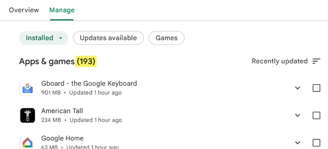

Introduction
Over time, our devices accumulate various applications that we may no longer use. These apps take up storage space, slow down system performance, and can even pose security risks. Regularly cleaning up your devices and uninstalling unused apps ensures that your devices run efficiently and securely.

Real-Life Example: Target Data Breach and Security Risks
In 2013, a major data breach at Target exposed the personal and financial information of over 40 million customers. The breach was traced back to outdated software installed by a third-party vendor that was no longer in use, leaving a vulnerability that hackers exploited.
This incident highlights the dangers of leaving unused apps or software on devices. Regularly uninstalling such apps can help prevent security risks and protect sensitive data from potential breaches.
Risks of Not Uninstalling Unused Apps and Cleaning Your Devices
Failing to update wi-fi passwords leads to several risks, including:
- Slower Performance: Unused apps consume storage and system resources, leading to lagging performance, slower load times, and even system crashes.
- Security Vulnerabilities: Apps that are not updated may have unpatched security flaws, leaving your device vulnerable to malware and cyberattacks.
- Data Privacy Risks: Some apps collect data in the background, even when not in use. Uninstalling these apps helps protect your personal information.